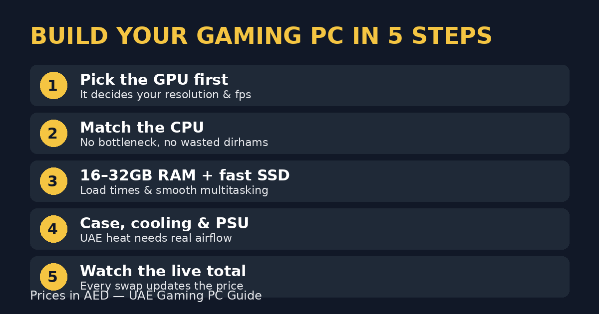

There are two kinds of gaming PC buyers in the Emirates. The first sorts by price, clicks buy, and hopes the parts inside make sense together. The second wants to choose everything — the graphics card, the processor, the case, even the cable colours — and watch the total change with every decision. If you are the second kind, a proper PC builder is the only way to shop. This guide explains how it works, what each part actually decides, and the honest point where a prebuilt becomes the better buy.

Every sensible build starts with the GPU, because the graphics card decides your resolution, your frame rates and most of your budget. In the UAE today the ladder looks like this: the RTX 5050 (from AED 2,049) for 1080p, the RTX 5060 and 5060 Ti (AED 2,499–2,719) for high-refresh 1080p and entry 1440p, the RTX 5070 (AED 4,389–4,719) for strong 1440p, and the RTX 5080 (from AED 8,769) if 4K is the goal. Pick the card for the monitor you own — or the one you honestly plan to buy this year — and the rest of the build falls into place around it.
The old way of building a PC was a spreadsheet, three open tabs and a headache. The modern way is a custom gaming pc builder that prices every part as you choose it: swap the processor and the total moves; step up the storage and you see exactly what it costs before you commit. That live total is what makes building safe for a first-timer — there are no surprises at checkout, and no part quietly eats the money you meant to spend on the graphics card.
| Build tier | Key parts | Typical UAE total | Best for |
|---|---|---|---|
| Starter | RTX 5050, 6-core CPU, 16GB RAM, 1TB SSD | From AED 4,499 | 1080p esports and everyday gaming |
| Sweet spot | RTX 5060 Ti, 32GB RAM, 1TB SSD | AED 6,999–8,999 | High-refresh 1080p, entry 1440p |
| Performance | RTX 5070 / 5070 Ti, 32GB RAM, 2TB SSD | AED 9,349–13,999 | 1440p high-refresh, streaming |
| Flagship | RTX 5080, high-end CPU, 2TB SSD | AED 17,299–17,999 | 4K high-refresh, no compromises |
A powerful card paired with a weak processor is money wasted, and the UAE adds one local twist: heat. Choose a case with genuine airflow and a cooler with headroom, because a PC that throttles in August is not the PC you paid for. Memory is simple — 16GB is the floor, 32GB is the comfortable answer for new builds. Storage fills faster than anyone expects; 1TB is workable, 2TB is peace of mind. And never cheap out on the power supply: it is the one part that protects all the others.
Building is satisfying, but it is not always the smartest route. A good prebuilt arrives assembled, tested, and covered by a single warranty, and during sale periods the maths can beat a parts list. If your time matters more than the last few percent of customisation, browse the current gaming pc uae range and compare the totals honestly against your builder list — the right answer is the one that gets you playing, not the one that wins an argument.
Once your build plan is set, it is worth seeing what the top of the range looks like when it is done properly — card, system, screen and chair priced together in dirhams. Our companion RTX 5080 UAE setup guide prices the complete flagship setup, from the card itself to the chair that finishes it.
A custom build gives you exactly the machine you described, at a price you watched come together part by part. Start with the graphics card, keep the rest balanced, respect the heat, and let the live total keep you honest. Whether you end up building or buying prebuilt, you will know precisely what your money bought — and that is the whole point.